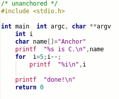

anch.org: Anchor Pseudocode Compiler
Advanced Negative Compilation Heuristic Ontological Refactorer
Why Anchor?
Anchor is a code decorator and "pseudocode" compiler. Anchor automatically adds curly braces and semicolons to pseudocode written in various programming languages. The goal is to save typing and perhaps even make programs easier to read, or debug. Anchor lets programmers use a Python or Lua-like indentation style while actually composing some other language like C, Java, PHP, C++, .NET, C#, or D. An example bash script integrates with the TCC compiler to make small, executable C scripts.
Where to get it
Anchor is hosted on Google Code. Subversion is recommended.
svn checkout http://anch.googlecode.com/svn/trunk/ anch-read-only
A package download is available as of 2/22/2015.
What uses it?
Paper Dragon uses Anchor to generate APA-formatted papers from text documents.
A template is available to cross-compile a DLL for Windows and Linux using Anchor. This 1-hour video demonstrates the build process and explains the template line-by-line.
Installation
A windows .exe is provided already. Just copy it somewhere in the computer's path. Compilation on Linux and other systems requires flex and a C compiler. Extract the archive.
unzip anchor.zip cd anchor
Run "make" from within the newly extracted directory.
make su -c 'make install'
Programming with Anchor
The rules are very simple. Indentation using tabs or 4 spaces {controls the placement of curly brackets}. Function arguments may optionally be set off by two spaces instead of parenthesis such that puts "hi" becomes puts ("hi") (not intended for nested parenthesis). The remaining lines are automatically terminated with semicolons. Comments are ignored.
Compilation
Example usage: converting example.anch to C:
anchor example.anch > example.c
Compiling the result with gcc (or any C compiler).
gcc example.c -o example.exe
If the indent style Anchor produces is undesirable for some reason, simply pipe the output through one of many other source code formatters.
For testing purposes, removing brackets from existing code may be assisted with "unanchor." Install GNU indent and use use the -i or -indent option for best results. The resulting file may need further editing.
unanchor -i example.c #see how it might look unanchor -i example.c > editme.anch # create a file
see an unanchored C windows program
Anchor knows nothing about the underlying language, so it processes a variety of curly bracket languages. The author uses it on C code, but it will most likely work with little or no change on C++, Java, .NET, PHP, Perl, awk and other types of configuration files or scripts. Programs may be compiled on Linux or unix by putting "anch" in front of the existing compiler or interpreter. Windows users may optionally install something like MingW, cygwin, or some other unix-like bourne shell like win bash to interpret the included "anch" convenience script.
GNU Makefiles
Add a rule like this to a GNU Makefile to make .c sources from .anch as needed.
#~ make foo.c %.c : %.anch anchor -q "$<" > "$@"
Optional TinyCC integration
The latest version of TinyCC may be obtained from the git repo, and there is also an unstable mob branch to try out with unreviewed patches. Be careful!
With TinyCC (TCC) installed, Anchor can execute pseudocode directly from the command line.
anch -run example.anch
Or put the following line
#!/usr/local/bin/anch [cflags] [libs] -run [program args]at the top of files to make executable C scripts:
#!/usr/local/bin/anch -run test args #include <stdio.h> int main int c, char **v while c-- printf "Argument %i is \"%s\"\n",c,v[c] return 0
Note: The #!shebang line is pretty limited and it was not intended for passing arguments, so they may not work at all. For something more powerful, use a comment:
//usr/local/bin/anch -run "$0" "$@";exit -or- //usr/bin/env anch [cflags] [libs] -run "$0" [some args] "$@" [more args];exit
By turning the executable line into a C99 comment, BASH will execute it, but almost all compilers will ignore it. Clever, huh? Don't forget to run chmod +x on the source code to mark it executable and then it will work like any other bash script. Arguments may be passed within the comment string, so pressing F5 in most any IDE will run the program with pre-defined arguments for testing.
Direct execution
The anch script can use TCC to execute through a pipe from stdin. For example, if both xsel and TCC are installed, the above code may be highlighted with the mouse and executed directly from the selection buffer, with arguments (and without even saving to disk).
xsel | anch -run - arg1 arg2
Other compilers or interpreters may be invoked through pipes as well (the -q option silences Anchor's advertising message):
xsel|anchor -q|gcc -Wall -g -xc - -or- anchor -q some_file.anch|tcc -run -
Other Source Code Formatters
Style Guides
Limitations and Copyright
No warrantee! Anchor is a learning toy for hobbies and fun; it might lack the swagger of commercial projects. The code is somewhat stable, but changes could be made that break builds. This happens with other lexers and compilers as well. Programming is a difficult task and Anchor is not guaranteed to make it easier.
Anchor and accompanying documentation are Copyright © 2015 Henry Kroll III. This page may be adapted and shared under the terms of the Creative Commons SA license inasmuch as it agrees with the terms of the Gnu Public License. Any of the above conditions can be waived by getting permission from the copyright holder.